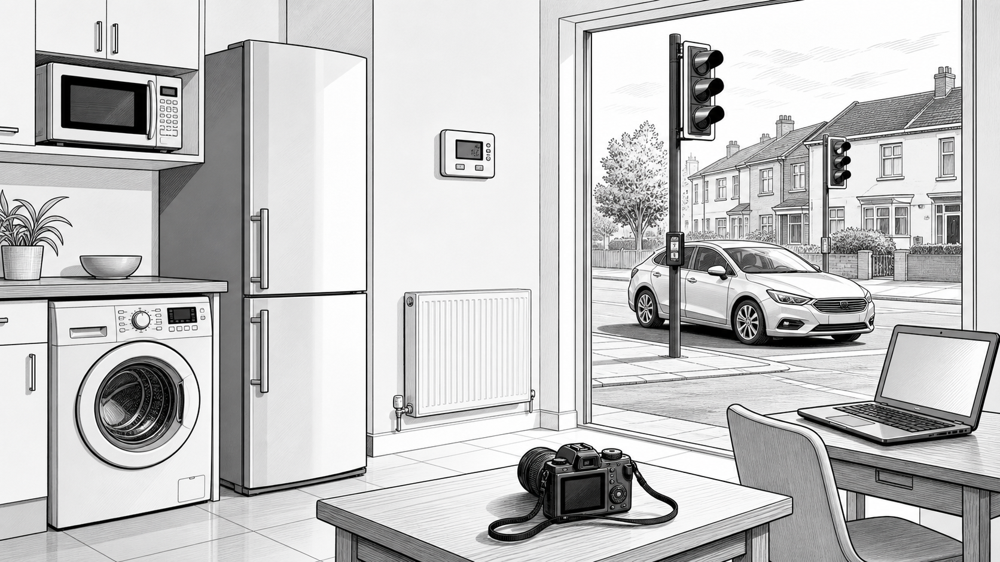
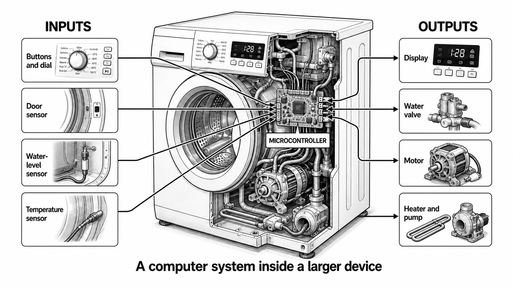
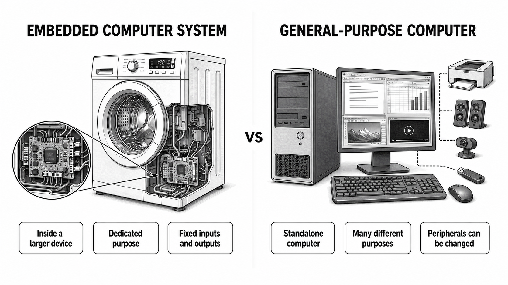

Discover how embedded computer systems control everyday devices, then
apply your understanding using OxfordAQA-style thinking.
AO1 · KnowAO2 · ApplyAO3 · Analyse
Interactive lesson
Start your learning record
Your work saves on this device. At the end, download one PDF and
submit it to your Teams assignment.
No account required · No data leaves this browser
What are we getting better at?Identifying embedded systems and explaining how they differ from general-purpose computers.
Saved
00
Lesson map
Embedded systems
60 minutes
Lesson objective
Understand the term “embedded system” and explain how it differs from a non-embedded system.
Knowledge
Know the definition, examples and common characteristics of embedded computer systems.
Skills
Classify devices, compare systems and support decisions using precise technical evidence.
Understanding
Understand why a dedicated controller may be built into a larger electrical or mechanical product.
AO1Remember and describe
Starter, definitions and characteristics
→
AO2Apply to devices
Inputs, outputs and classifications
→
AO3Analyse and justify
Evaluate an unfamiliar, ambiguous example
Begin by observing everyday devices and recording your initial ideas.
01
Do Now · 7 minutes
Hidden computers
Observe · Predict

Computers do not always look like computers. What might be happening inside these objects?
Look carefully: use the image to record your current thinking. These are initial ideas, so you are not expected to use perfect terminology yet.
1Identify four objects in the image that you think contain a computer system.Observe
2Choose one object. What do you think its computer controls?Predict
3Which object is the clearest example of a general-purpose computer?Identify
4Suggest one difference between the computer inside the washing machine and the laptop.Compare
Save these ideas now; you will improve one of them after the reading.
02
Main Activity 1 · 18 minutes
See the computer inside
AO1 → AO2

The controller receives data from inputs, processes it and controls outputs inside the larger machine.
Read before you applyOxfordAQA Computer Science textbook · pages 202–203
What is an embedded system?
“Embedded systems are computers designed to do one specific task.”
A processor does not have to sit inside a laptop or desktop computer. It can be built
into a larger machine or everyday object so that it regulates and controls that device.
The computer inside a washing machine, for example, monitors inputs such as the door,
water level and temperature, then controls outputs including the motor, heater and pump.
The software that controls an embedded system is called firmware and is
normally stored in ROM. Many embedded systems use a microcontroller: a
compact computer whose main components are integrated onto one chip. Because it is
designed for a limited range of actions, it may need less memory, processing power and
user interaction than a general-purpose computer.
FirmwareInstructions that control the deviceMicrocontrollerA small computer integrated onto one chipDedicated purposeA limited set of related functions
Core idea
An embedded system is a computer system built into a larger device, usually to perform a dedicated or limited function.
Return to your starter
Your first comparison
No starter idea recorded yet.
AWrite your own precise definition of an embedded system.AO1 · [2]
BUse the visual to trace the input–process–output cycle.AO2
CSelect the three characteristics normally associated with an embedded system.AO1
DExplain why a central-heating controller is an embedded system.AO2 · [2]
Success criteria
The revised starter comparison now uses embedded, dedicated purpose and general-purpose accurately.
The definition identifies a computer system, a larger device and a dedicated or limited purpose.
Inputs provide data; the controller processes it; outputs cause an action or display information.
The correct characteristics are the first three choices.
The heating explanation links a specific purpose—monitoring and controlling temperature—to the larger heating system.
Use technical evidence, not only the name of the device.
03
Main Activity 2 · 20 minutes
Classify, compare, evaluate
AO2 → AO3

Classification needs evidence: purpose, position in a larger system, inputs and outputs, and flexibility.
Read before you evaluateOxfordAQA Computer Science textbook · page 203
Embedded does not mean disconnected
Embedded processors appear in consumer electronics, household appliances, cars,
industrial machinery and medical equipment. Modern embedded systems may also include
wireless internet connectivity so that the device can be monitored or controlled
remotely. A network connection therefore does not automatically make a device a
general-purpose computer.
The better test is to examine the system’s role. An embedded controller is normally part
of a larger product and is designed around a limited purpose. A desktop or laptop is a
standalone computer that can run many unrelated applications and accept changeable
peripherals. Embedded systems can be smaller, cheaper and more energy efficient, but
they are usually harder to adjust, replace or upgrade.
Ask about purposeIs the system designed around one device or a limited set of related actions?
Ask about positionIs the controller part of a larger electrical or mechanical product?
Ask about flexibilityCan the user freely change applications and peripherals?
AA digital camera contains which type of computer system?AO2
BA laptop is best described as which type of computer?AO2
C“A smart TV runs apps, so it cannot contain an embedded system.” Evaluate this claim.AO3 · [6]
Consider both sides, then reach a reasoned conclusion.
Reasoning guide
A digital camera contains an embedded system: its controller is built into the camera for a limited set of related functions.
A laptop is general purpose: it independently runs many types of software and accepts different peripherals.
For the smart TV, recognise its app flexibility, but weigh this against its principal purpose, integrated hardware and fixed TV-related inputs/outputs. A supported conclusion matters more than a simple label.
Strong conclusions follow from evidence rather than from appearance.
04
Extension · authentic exam practice
Past-paper challenge
AO1 + AO2
OxfordAQA International GCSE Computer Science 9210/2 · November 2024 · Question 04
04.1
State an example of an embedded system.
[1 mark]
04.2
Describe three common differences between embedded systems and desktop computers.
[3 marks]
TOTAL: 4
Published mark-scheme guidance
04.1: Award one mark for a reasonable embedded-system example, such as a fridge, microwave, central-heating system, digital camera, suitable medical device, burglar alarm, flight-control system or suitable industrial machinery.
04.2: Award one mark for each valid comparison, maximum three. Accepted differences include processing power or cores, memory, ROM/RAM balance, secondary storage, fixed or changeable I/O, user interface, dedicated or general purpose, modularity, firmware, being part of a larger system, and electrical power.
Your PDF will preserve both the original response and the improvement.
05
Plenary · 5 minutes
One final explanation
AO2 → AO3
Exit ticket
A smart washing machine connects to Wi-Fi and runs several wash programmes. Explain why it still contains an embedded computer system.
Make three linked points. Do not simply repeat the device name.
A strong response explains that:
the controller is built into and forms part of the larger washing machine;
it performs a dedicated set of washing and monitoring functions;
Wi-Fi and several related programs do not make it a standalone general-purpose computer.
Use the success points to finish with your strongest explanation.
06
Finish & submit
Your learning record
AO1 · AO2 · AO3
0%complete
Complete each activity to build your report.
Your PDF records what you wrote, your original exam answers, self-marking, improvements and the assessment objectives practised.
Step 1
Download your PDF learning report
The file is created in your browser. Check that your name and class are correct before downloading.
1
Download Save the PDF where you can find it.
2
Open Teams Go to the assignment for this lesson.
3
Add work Upload the PDF, check the filename, then submit.